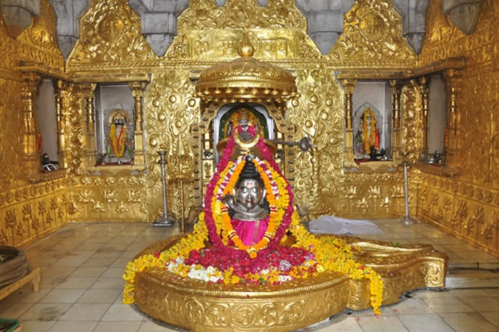
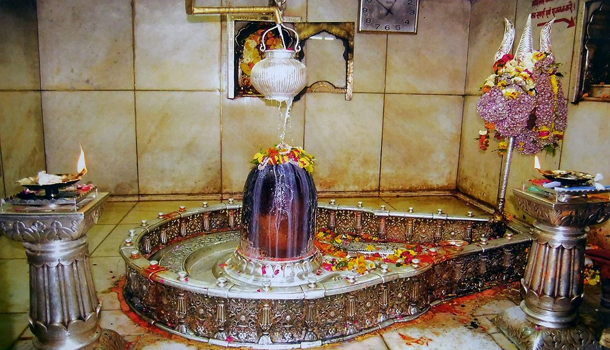
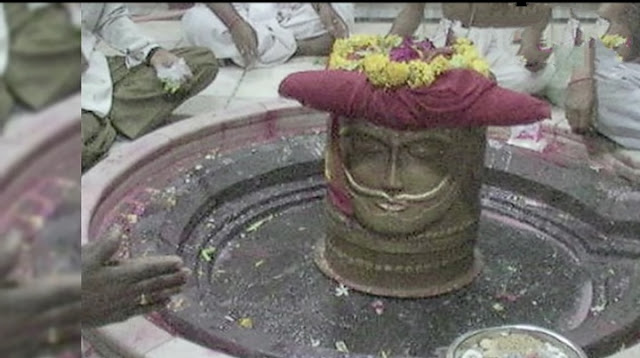
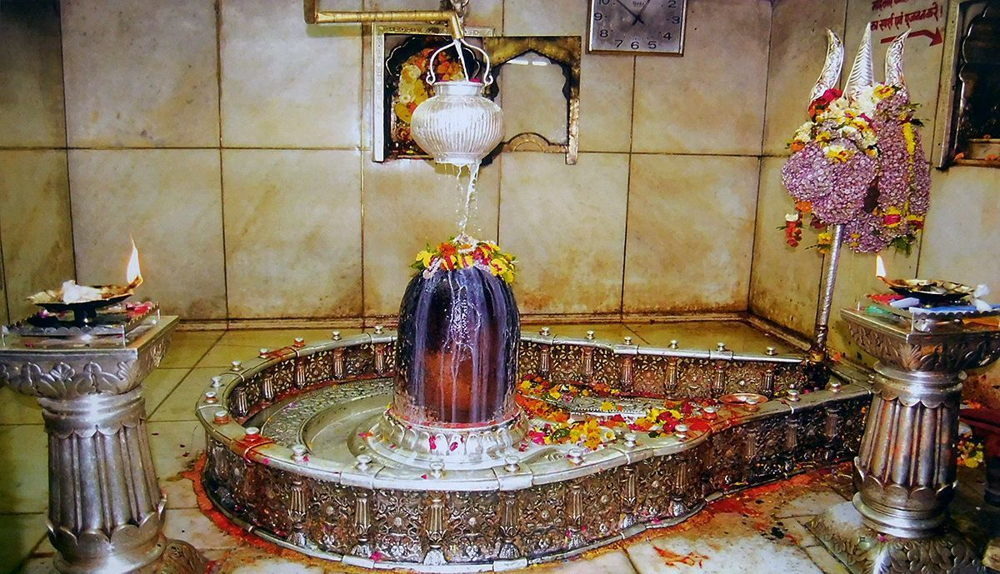
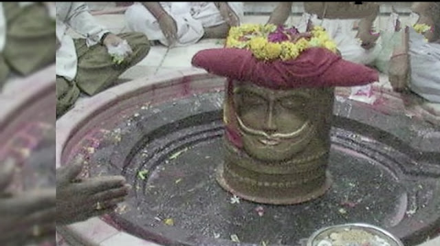

सौराष्ट्रदेशे विशदेऽतिरम्ये ज्योतिर्मयं चन्द्रकलावतंसम् ।
भक्तिप्रदानाय कृपावतीर्णं तं सोमनाथं शरणं प्रपद्ये ॥१॥
...श्री सोमनाथ ज्योतिर्लिंग
भक्तिप्रदानाय कृपावतीर्णं तं सोमनाथं शरणं प्रपद्ये ॥१॥
...श्री सोमनाथ ज्योतिर्लिंग
जो शिव अपनी भक्ति प्रदान करने के लिए सौराष्ट्र प्रदेश में दयापूर्वक अवतरित हुए हैं,
चंद्रमा जिनके मस्तक का आभूषण बना है,
उन ज्योतिर्लिंग स्वरुप भगवान श्री सोमनाथ की शरण में मैं जाता हूँ ॥
चंद्रमा जिनके मस्तक का आभूषण बना है,
उन ज्योतिर्लिंग स्वरुप भगवान श्री सोमनाथ की शरण में मैं जाता हूँ ॥
I seek refuge of the Soma Nadha, Who is in the holy and pretty Sourashtra,
Who is dazzling with light, Who wears the crescent of the moon, Who has come
there to give, The gift of devotion and mercy.
श्रीशैलशृङ्गे विबुधातिसङ्गे तुलाद्रितुङ्गेऽपि मुदा वसन्तम् ।
तमर्जुनं मल्लिकपूर्वमेकं नमामि संसारसमुद्रसेतुम् ॥२॥
...श्री मल्लिकार्जुन ज्योतिर्लिंग
तमर्जुनं मल्लिकपूर्वमेकं नमामि संसारसमुद्रसेतुम् ॥२॥
...श्री मल्लिकार्जुन ज्योतिर्लिंग
जो ऊँचाई के आदर्शभूत पर्वतों से भी बढ़कर ऊँचे श्री शैल के शिखर पर,
जहाँ देवताओं का अत्यन्त समागम रहता है,
प्रसन्नतापूर्वक निवास करते हैं तथा जो संसार-सागर से पार कराने के लिए पुल के समान है
, उन एकमात्र प्रभु मल्लिकार्जुन को मैं नमस्कार करता हूँ ॥
जहाँ देवताओं का अत्यन्त समागम रहता है,
प्रसन्नतापूर्वक निवास करते हैं तथा जो संसार-सागर से पार कराने के लिए पुल के समान है
, उन एकमात्र प्रभु मल्लिकार्जुन को मैं नमस्कार करता हूँ ॥
I salute him who is the bridge to the ocean of life, Who is in the company of
all gods, And living in the union of Sri Shaila, Who resides on the peak of
Thula, And who is called Mallikarjuna.

अवन्तिकायां विहितावतारं मुक्तिप्रदानाय च सज्जनानाम् ।
अकालमृत्योः परिरक्षणार्थं वन्दे महाकालमहासुरेशम् ॥३॥
...श्री महाकालेश्वर ज्योतिर्लिंग
अकालमृत्योः परिरक्षणार्थं वन्दे महाकालमहासुरेशम् ॥३॥
...श्री महाकालेश्वर ज्योतिर्लिंग
संतजनो को मोक्ष देने के लिए जिन्होंने अवन्तिपुरी (वर्तमान में उज्जैन) में अवतार धारण किया है
, उन महाकाल नाम से विख्यात महादेवजी को मैं अकाल मृत्यु से बचाने के लिए प्रणाम करता हूँ ॥
, उन महाकाल नाम से विख्यात महादेवजी को मैं अकाल मृत्यु से बचाने के लिए प्रणाम करता हूँ ॥
I salute that Maha Kala, Who is the lord of all devas, Who has incarnated in
the city of Avanthi, Forgiving salvation to good people,
And to save people from untimely death.
And to save people from untimely death.
कावेरिकानर्मदयोः पवित्रे समागमे सज्जनतारणाय ।
सदैवमान्धातृपुरे वसन्तमोङ्कारमीशं शिवमेकमीडे ॥४॥
...ओंकारेश्वर ज्योतिर्लिंग
सदैवमान्धातृपुरे वसन्तमोङ्कारमीशं शिवमेकमीडे ॥४॥
...ओंकारेश्वर ज्योतिर्लिंग
जो सत्पुरुषो को संसार सागर से पार उतारने के लिए कावेरी और नर्मदा के पवित्र संगम के निकट मान्धाता के पुर में सदा निवास करते हैं,
उन अद्वित्तीय कल्याणमय भगवान ऊँकारेश्वर का मैं स्तवन करता हूँ ॥
उन अद्वित्तीय कल्याणमय भगवान ऊँकारेश्वर का मैं स्तवन करता हूँ ॥
I meditate only on Shiva, With the form of the letter Om, Who lives In the city
of Mandhatripura, Which is in the holy confluence Of rivers Cauvery and
Narmadha, For helping good people cross, The Ocean of the misery of life.

पूर्वोत्तरे प्रज्वलिकानिधाने सदा वसन्तं गिरिजासमेतम् ।
सुरासुराराधितपादपद्मं श्रीवैद्यनाथं तमहं नमामि ॥५॥
...श्री वैद्यनाथ ज्योतिर्लिंग
सुरासुराराधितपादपद्मं श्रीवैद्यनाथं तमहं नमामि ॥५॥
...श्री वैद्यनाथ ज्योतिर्लिंग
जो पूर्वोत्तर दिशा में चिताभूमि (वर्तमान में वैद्यनाथ धाम) के भीतर सदा ही गिरिजा के साथ वास करते हैं,
देवता और असुर जिनके चरण कमलों की आराधना करते हैं,
उन श्री वैद्यनाथ को मैं प्रणाम करता हूँ ॥
देवता और असुर जिनके चरण कमलों की आराधना करते हैं,
उन श्री वैद्यनाथ को मैं प्रणाम करता हूँ ॥
I salute that Vaidyanatha, Whose lotus feet are worshipped, By all asuras and devas, And who lives in place of
eternal shine, In the northeast of India, Along with his consort Parvathi.
याम्ये सदङ्गे नगरेऽतिरम्ये विभूषिताङ्गं विविधैश्च भोगैः ।
सद्भक्तिमुक्तिप्रदमीशमेकं श्रीनागनाथं शरणं प्रपद्ये ॥६॥
...श्री नागेश्वर ज्योतिर्लिंग
सद्भक्तिमुक्तिप्रदमीशमेकं श्रीनागनाथं शरणं प्रपद्ये ॥६॥
...श्री नागेश्वर ज्योतिर्लिंग
जो दक्षिण के अत्यन्त रमणीय सदंग नगर में विविध भोगो से संपन्न होकर आभूषणों से भूषित हो रहे हैं,
जो एकमात्र सदभक्ति और मुक्ति को देने वाले हैं,
उन प्रभु श्रीनागनाथ जी की शरण में मैं जाता हूँ ॥
जो एकमात्र सदभक्ति और मुक्ति को देने वाले हैं,
उन प्रभु श्रीनागनाथ जी की शरण में मैं जाता हूँ ॥
I seek refuge of Lord Naganatha, Who lives in the pretty town Of Sadanga in the
southern part, Who is well decorated, Who grants all kinds of pleasures, And who
is the only God who grants, Devotion and salvation.
महाद्रिपार्श्वे च तटे रमन्तं सम्पूज्यमानं सततं मुनीन्द्रैः ।
सुरासुरैर्यक्ष महोरगाढ्यैः केदारमीशं शिवमेकमीडे ॥७॥
...श्री केदारनाथ ज्योतिर्लिंग
सुरासुरैर्यक्ष महोरगाढ्यैः केदारमीशं शिवमेकमीडे ॥७॥
...श्री केदारनाथ ज्योतिर्लिंग
जो महागिरि हिमालय के पास केदारश्रृंग के तट पर सदा निवास करते हुए मुनीश्वरो द्वारा पूजित होते हैं तथा देवता,
असुर, यज्ञ और महान सर्प आदि भी जिनकी पूजा करते हैं,
उन एक कल्याणकारक भगवान केदारनाथ का मैं स्तवन करता हूँ ॥
असुर, यज्ञ और महान सर्प आदि भी जिनकी पूजा करते हैं,
उन एक कल्याणकारक भगवान केदारनाथ का मैं स्तवन करता हूँ ॥
I meditate on Shiva who is the Lord of Kedara, Who takes pleasure in the valley of the great mountain, Who is always
worshipped by great sages, And also devas, asuras, yakshas and nagas.
सह्याद्रिशीर्षे विमले वसन्तं गोदावरितीरपवित्रदेशे ।
यद्धर्शनात्पातकमाशु नाशं प्रयाति तं त्र्यम्बकमीशमीडे ॥८॥
...श्री त्र्यम्बकेश्वर ज्योतिर्लिंग
यद्धर्शनात्पातकमाशु नाशं प्रयाति तं त्र्यम्बकमीशमीडे ॥८॥
...श्री त्र्यम्बकेश्वर ज्योतिर्लिंग
जो गोदावरी तट के पवित्र देश में सह्य पर्वत के विमल शिखर पर वास करते हैं,
जिनके दर्शन से तुरन्त ही पातक नष्ट हो जाता है,
उन श्री त्र्यम्बकेश्वर का मैं स्तवन करता हूँ ॥
जिनके दर्शन से तुरन्त ही पातक नष्ट हो जाता है,
उन श्री त्र्यम्बकेश्वर का मैं स्तवन करता हूँ ॥
I meditate on the lord of Triambaka, Who lives on the peak of western ghats, In
the holy shores of river Godavari, And who destroys all sins, Of his devotees
who see him.
सुताम्रपर्णीजलराशियोगे निबध्य सेतुं विशिखैरसंख्यैः ।
श्रीरामचन्द्रेण समर्पितं तं रामेश्वराख्यं नियतं नमामि ॥९॥
...श्री रामेश्वर ज्योतिर्लिंग
श्रीरामचन्द्रेण समर्पितं तं रामेश्वराख्यं नियतं नमामि ॥९॥
...श्री रामेश्वर ज्योतिर्लिंग
जो भगवान श्री रामचन्द्र जी के द्वारा ताम्रपर्णी और सागर के संगम में अनेक बाणों द्वारा पुल बाँधकर स्थापित किये गए,
उन श्री रामेश्वर को मैं नियम से प्रणाम करता हूँ ॥
उन श्री रामेश्वर को मैं नियम से प्रणाम करता हूँ ॥
I meditate with devotion to the lord of Rama, Who lives in the confluence of
river, Thamravarnee with the sea,
Where a bridge has been built. With the help of umpteen arrows, By the Lord Sri Rama Chandra.
Where a bridge has been built. With the help of umpteen arrows, By the Lord Sri Rama Chandra.
यं डाकिनिशाकिनिकासमाजे निषेव्यमाणं पिशिताशनैश्च ।
सदैव भीमादिपदप्रसिद्दं तं शङ्करं भक्तहितं नमामि ॥१०॥
...श्री भीमांशंकर ज्योतिर्लिंग
सदैव भीमादिपदप्रसिद्दं तं शङ्करं भक्तहितं नमामि ॥१०॥
...श्री भीमांशंकर ज्योतिर्लिंग
जो डाकिनी और शाकिनी वृन्द में प्रेतों द्वारा सदैव सेवित होते हैं,
उन भक्ति हितकारी भगवान भीम शंकर को मैं प्रणाम करता हूँ ॥
उन भक्ति हितकारी भगवान भीम शंकर को मैं प्रणाम करता हूँ ॥
I salute that Lord Sankara Who is the darling of his devotees, Who is being
worshipped by rakshasas, In the company of Ghosts called Dakini and Sakini, And
who is well known as “Bheema”.
सानन्दमानन्दवने वसन्तमानन्दकन्दं हतपापवृन्दम् ।
वाराणसीनाथमनाथनाथं श्रीविश्वनाथं शरणं प्रपद्ये ॥११॥
...श्री विश्वनाथ ज्योतिर्लिंग
वाराणसीनाथमनाथनाथं श्रीविश्वनाथं शरणं प्रपद्ये ॥११॥
...श्री विश्वनाथ ज्योतिर्लिंग
जो स्वयं आनंद कन्द हैं और आनंदपूर्वक आनन्द वन (वर्तमान में काशी) में वास करते हैं,
जो पाप समूह के नाश करने वाले हैं
, उन अनाथों के नाथ काशीपति श्री विश्वनाथ की शरण में मैं जाता हूँ ॥
जो पाप समूह के नाश करने वाले हैं
, उन अनाथों के नाथ काशीपति श्री विश्वनाथ की शरण में मैं जाता हूँ ॥
I seek the protection of the Lord of the universe, Who lives is happily in the
forest of joy, Who is the basis of all happiness, Who destroys all accumulated
sins, Who is the lord of the city of Varanasi, And who is the lord of all who
does not have anybody.
इलापुरे रम्यविशालकेऽस्मिन् समुल्लसन्तं च जगद्वरेण्यम् ।
वन्दे महोदारतरस्वभावं घृष्णेश्वराख्यं शरणम् प्रपद्ये ॥१२॥
...श्री घुश्मेश्वर ज्योतिर्लिंग
वन्दे महोदारतरस्वभावं घृष्णेश्वराख्यं शरणम् प्रपद्ये ॥१२॥
...श्री घुश्मेश्वर ज्योतिर्लिंग
जो इलापुर के सुरम्य मंदिर में विराजमान होकर समस्त जगत के आराधनीय हो रहे हैं,
जिनका स्वभाव बड़ा ही उदार है,
उन घृष्णेश्वर नामक ज्योतिर्मय भगवान शिव की शरण में मैं जाता हूँ ॥
जिनका स्वभाव बड़ा ही उदार है,
उन घृष्णेश्वर नामक ज्योतिर्मय भगवान शिव की शरण में मैं जाता हूँ ॥
I seek the refuge of Ghusraneswara, Who lives and plays in the pretty city of
Ilapura, Who is the greatest among the universe, And who is by his nature
extremely kind.
ज्योतिर्मयद्वादशलिङ्गकानां शिवात्मनां प्रोक्तमिदं क्रमेण ।
स्तोत्रं पठित्वा मनुजोऽतिभक्त्या फलं तदालोक्य निजं भजेच्च ॥
स्तोत्रं पठित्वा मनुजोऽतिभक्त्या फलं तदालोक्य निजं भजेच्च ॥
यदि मनुष्य क्रमश: कहे गये इन द्वादश ज्योतिर्मय शिव लिंगो के स्तोत्र का भक्तिपूर्वक पाठ करें तो इनके दर्शन से होने
वाला फल प्राप्त कर सकता है ॥
॥ इति द्वादश ज्योतिर्लिङ्गस्तोत्रं संपूर्णम् ॥